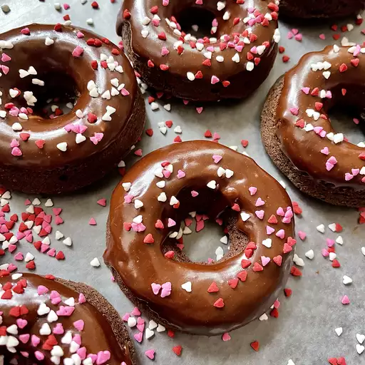

Chocolate Donut

Description
Yummy glazed chocolate donuts without frying!
My family loved these!
I don't fry anything,so was happy to find this recipe.
You can also sprinkle these with toppings after dipping into the glaze.
Ingredients
- cooking spray
- 2 cups all-purpose flour
- 3/4 cup white sugar
- 1/2 cup unsweetened cocoa powder
- 1 teaspoon baking powder
- 1 teaspoon baking soda
- 1 teaspoon salt
- 3/4 cup milk
- 2 tablespoons milk
- 2 eggs
- 2 tablespoons butter, melted
- 1 teaspoon vanilla extract